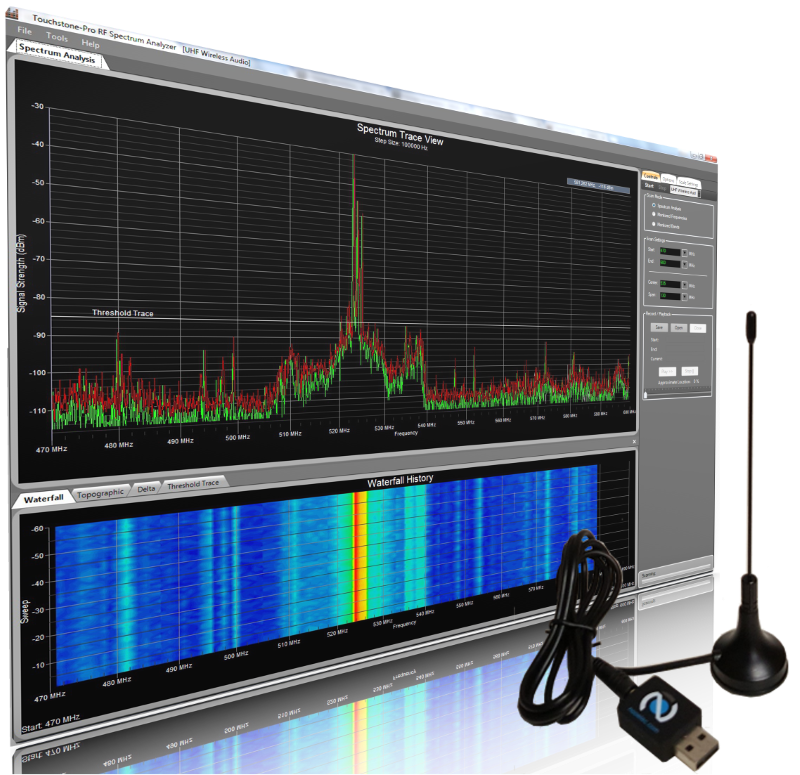

hardware platforms
عائلة AB-SpectroX
حلول تحليل ترددات احترافية متنقلة ومكتبية · قابلة للنشر ميدانياً ومخبرياً
AB-SpectroX Mobile Edition
إصدار ميداني محمول · بطارية محسنة · شاشة عالية الدقة

تصميم محمول صغير الحجم · تحليل كامل من 1 MHz إلى 7.25 GHz · مثالي للنشر الميداني ومراقبة الطيف وصيد التداخلات.
بطارية 8+ ساعات تخزين 256GB مزامنة لاسلكية
AB-SpectroX Desktop Workstation
درجة مخبرية · أداء عالي · دقة قياس فائقة

محطة عمل عالية الأداء · دعم شاشات متعددة · معايرة متقدمة · مثالية للمراقبة الطيفية المستمرة والتطبيقات المخبرية.
أربع شاشات معالج 12 نواة 64GB RAM